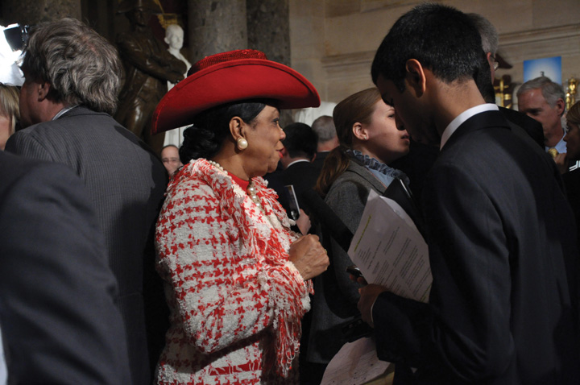

After reading this section, you should be able to answer the following questions:
Congressional media relations in the information age are as complex as the 535 members of the House and Senate are unique. The size, convoluted organization, and many rules governing Congress do not make for a media-friendly institution. The media environment has become more complicated to negotiate, as members must contend with both traditional news media and new media, which provide a two-way flow of information between legislators and their constituents.
When asked by a Time magazine reporter to identify the most underplayed story of our times, former news anchor Walter Cronkite replied, “Congress. This is where our laws are made, where our laws are debated, and we don’t cover Congress the way it ought to be.”“10 Questions for Walter Cronkite,” Time, November 3, 2003, 8.
Cronkite’s observation speaks to the changing relations between the national press and Congress over time. For the first century of the republic, Congress and its members were far more visible in newspapers than presidents, who felt it was beneath the dignity of the office to speak on public issues. Debates on Capitol Hill were widely reprinted in partisan papers. The profit-minded penny press of the 1830s found Washington news attractive but often focused on members’ personal escapades, which raised the ire and suspicion of congressmen. Congress adopted the practice of reviewing reporters’ credentials, granting them permission to sit in the drafty public gallery on a case-by-case basis. When the Capitol was rebuilt in the 1850s, the construction included press galleries, separate areas to which reporters were automatically admitted on the recommendation of their editors.
By the 1920s, the president made most of the news; Congress was relegated to a distant second place, and the Supreme Court received the least press.Timothy E. Cook, Making Laws & Making News (Washington, DC: Brookings, 1989). The modern relationship between the media and Congress took shape in the 1970s, when Washington Post reporters Bob Woodward and Carl Bernstein broke the story about the break-in at the Democratic National Committee headquarters at the behest of the Nixon White House to uncover Democrats’ campaign strategies. Hundreds of reporters were sent to Washington to cover the Watergate scandal, and many stayed after discovering that the town was ripe with stories. The Watergate scandal prompted Congress to pass sunshine lawsLaws passed by Congress to open hearings to the public and the press., which opened most hearings to the public and the press. Many members welcomed the opportunity offered by the invigorated Washington press corps to promote themselves to their constituents.
There are a number of reasons why the president is the newsmaker-in-chief while Congress remains in his shadow. The president is a media magnet because he is a single individual at the hub of the executive branch. It is more difficult for reporters to cover Capitol Hill. Congress has many potential newsmakers and story lines that take journalists time and energy to track down. Congress also has been resistant to new communications technologies that might elevate its profile but at the same time subject members to greater public criticism. Radio journalists were not admitted to the press gallery until 1939. Television cameras filmed the opening session of the House in 1947; they would not be allowed back for almost thirty-five years. The institution did not begin to embrace the Internet until 1995, when websites for the House and Senate were established but used by only a handful of members. Only recently have members begun to embrace social media.
The tradition-bound Congress embraced the Internet slowly. Political scientist Stephen Frantzich describes the situation: “One can almost hear the crunch of metal as one ancient institution and one new technology collide. For all the promises of cyberdemocracy and enhanced political linkages, in some ways the interface of Congress and the Internet is a match made in Hell. Divorce is not possible, but tensions are inevitable.”Stephen E. Frantzich, “RepresNETation: Congress and the Internet,” paper presented at the American University Center on Congress and the Presidency conference on “Congress, the Internet, and Deliberative Democracy,” May 4, 2001.
Members were reluctant to change the way they conducted business and were wary of receiving a barrage of e-mail messages that would create more work for their overtaxed staffs. This attitude changed as members used the Internet to get elected, staff members became tech savvy, and constituents became Internet users. Today, all members communicate through online media, although some members are more sophisticated in their digital communication strategies than others.
Websites are an important resource for members’ public relations efforts. They provide a platform for publicizing members’ views and accomplishments that can be readily accessed by reporters. Members use websites to present their image to the public without journalistic filters. Websites can promote grassroots support for members through tools, such as printable brochures and buttons. Websites have improved constituent service. They are “virtual offices” open twenty-four hours a day, providing information and opportunities for interaction. Members can solicit opinions from constituents quickly through online polls, message boards, and social media.Congress Online Project, Nine Benefits of a Good Website, research report (Washington, DC: George Washington University, 2003).
The websites for the House, Senate, and committees provide the public with a wealth of information about hearings and legislative action. The complete text of bills, the Congressional Record, which provides transcripts of floor debate, committee action, and institutional history, is available through the THOMAS website.
Media depictions of Congress are a mixed bag. National news coverage focuses on the institution of Congress and tends to highlight conflict and partisan bickering. Local news covers individual members and is more positive. Depictions of Congress in television and film often exaggerate stereotypes, such as the corrupt senator or the crusading House representative.
The distinction between the institution of Congress and individual members is evident in media coverage. There are distinct differences in the tone, content, and scope of news reports on Congress in the national compared to local press. National news reports focus more on the institution than individual members. Stories emphasize the investigative side of reporting in that they seek the “smoking gun,” a problem, or a scandal. Reports convey the impression that Congress is populated by power brokers who are in the pocket of political insiders such as interest groups; reports often portray members of Congress as being ignorant of public concerns.
Local media coverage focuses on members more than the institution. Journalists value the access they have to members when they come home to their districts. Few local media organizations have Washington bureaus, so they rely heavily on press releases, wire feeds, canned video, members’ websites, blogs, and social media. Members spend much more time courting the local press than national media. The local press serves as an intermediary between members and their constituents by focusing on the congressional stories most relevant to the district.
Local stories generally are more positive than national news reports. Journalists even may become unofficial cheerleaders for members. This does not mean that members never receive bad press from local news sources. During reelection bids, especially, local journalists emphasize their watchdog role, and reporting can become more critical of members.Danielle Vinson, Local Media Coverage of Congress and Its Members (Cresskill, NJ: Hampton Press, 2002).
When the media uncover evidence of a member of Congress misbehaving, the result is frenzied scandal coverage. In 2001, the press revealed that Rep. Gary Condit (D-CA) had been having an affair with Chandra Levy, an intern who had disappeared and whose remains were later found in Washington, DC. Representative Condit was dogged by journalists from both respectable and tabloid organizations, whose stories implied that he had something to do with Levy’s fate. Representative Condit lost his reelection bid. The story was headline news for months until the 9/11 terrorist attacks put it on the back burner. In 2011, a jury convicted another man in Levy’s murder.
Congress has been the subject of numerous television programs and movies. Like media coverage in general, television and film treatment of Congress pales in comparison to that of the presidency.
There has been a stream of television sitcoms and dramas set in Congress, most of which have been short-lived. Programs exaggerate images of the institution that are predicated in reality. Others reinforce unflattering stereotypes of members as criminals or buffoons.Tracey L. Gladstone-Sovell, “Criminals and Buffoons: The Portrayal of Elected Officials on Entertainment Television,” in It’s Show Time!, ed. David A. Schultz (New York: Peter Lang, 2000), 119–32. The television version of Congress is even more of a male bastion than the institution itself. Women primarily serve as support staff or love interests of male members. Mister Sterling, the congressional counterpart to The West Wing that survived one season, is typical. It featured an idealistic but all-too-serious young congressman who uses his intelligence to outsmart his older, white, male colleagues. Women members on the show were few, and none held leadership positions. Sterling used talk radio, which is dominated by male hosts and listeners, as his primary means of communicating to the public.Garrett Epps, “Sterling Character,” The American Prospect, January 17, 2003. Another quickly cancelled program was Women of the House, in which a scatterbrained Southern belle inherits the Senate seat of her deceased fifth husband and schemes her way through her congressional duties.
Congress has been depicted in more than a dozen feature films since the 1930s, far fewer than the more than one hundred films that have focused on the presidency. Many of them overdramatize legislative processes and committee actions and oversimplify the workings of the institution. Floor action and committee hearings are ridden with conflict and full of surprises. In reality, floor action almost invariably proceeds by the rules with great decorum. The work of congressional committees is deliberate and complicated. On film, members of Congress are often pitted against one another. In fact, members rarely engage in direct confrontation.David L. Paletz and Daniel Lapinski, “Movies on Congress,” in The Encyclopedia of the United States Congress, ed. Donald C. Bacon, Roger H. Davidson, and Morton Keller (New York: Simon and Schuster, 1995).
In Legally Blonde 2: Red, White & Blonde (2003), pink-clad Harvard Law School graduate Elle Woods goes to Washington with the aim of passing an animal rights bill to save the mother of her pet Chihuahua, Bruiser. To promote “Bruiser’s Bill,” Elle barges into a congressional hearing, interrupting the proceedings in a way that, in real life, would have guaranteed her an escort out by security. Instead, she gains enough support to get the bill passed. A clip of Mr. Smith Goes to Washington (1939) is cleverly inserted into the film to position it in the tradition of films in which the young, idealistic underdog takes on the corrupt lifelong politician.
Films depict members of Congress as politically and morally flawed. Blinded by ambition, they compromise their beliefs and values to achieve position and power.Gary Crowdus, “Politicians in the American Cinema,” The Political Companion to American Film (Chicago: Lakeview Press, 1994), 322–30. In The Seduction of Joe Tynan (1979), a well-intentioned senator has an extramarital affair, even as he considers but ultimately resists caving in to powerful members to advance his career.
The media can influence the behavior of members of Congress, the public’s perception of the institution, and constituents’ feelings about their members.
Perspectives on the influence on the news media on Congress’ legislative activities differ. Some scholars contend that because the media do not cover much of what goes on in Congress, members are largely able to do their jobs without interference. Members with high public visibility can get into trouble as they are subject to scrutiny and criticism. Therefore, members who pursue insider strategiesTactics used by members to work behind the scenes in Congress to forge coalitions while avoiding press scrutiny.—working behind the scenes to forge coalitions—can avoid press interference.Stephen Hess, The Ultimate Insiders (Washington, DC: Brookings, 1986).
Another perspective argues that the media have dramatically changed Congress by promoting outsider strategiesMembers court media publicity in order to achieve their legislative goals. for governing. To be successful, members must court media publicity rather than forge congressional relationships that are essential for building consensus. The result is that legislative actions can be held up as members seek to influence public opinion.Todd Gitlin, Media Unlimited (New York: Metropolitan Books, 2002).
A third, more realistic perspective posits that both the insider and outsider strategies are essential for lawmaking. It is important for members to publicize their views via the media in order to rally public opinion and at the same time work to build cooperation within the institution.Timothy E. Cook, Governing with the News (Chicago: University of Chicago Press, 1998).
Public confidence in Congress has declined over the past three decades. Congress has the lowest approval ratings of the three national institutions. In 2010, Congress received its lowest approval rating in the history of the Gallup poll, with 83 percent of the public disapproving of the way the institution is handling its job.
Congressional Approval over Time
A graph and explanation of congressional approval over time is available on the Gallup website at http://www.gallup.com/poll/145238/congress-job-approval-rating-worst-gallup-history.aspx.
Scholars offer competing views about whether or not the media contribute to this trend of declining approval of Congress. Some suggest that the image of an institution characterized by conflict and deal making that pervades media coverage has a negative impact on public perceptions. Most Americans abhor the squabbling between members and acrimonious interactions between Congress and the presidency that they see in the media. They feel that congressional leaders have lost touch with average people and that the institution is dominated by special interests.John Hibbing and Elizabeth Theiss-Morse, Congress as Public Enemy (New York: Cambridge, 1995). Other researchers disagree and believe that evidence of a direct connection between media coverage and declining public opinion about Congress is lacking. People’s low opinion of Congress is based on the public’s holding the institution accountable for negative societal conditions, such as a bad economy.Pippa Norris, “The News Media and Democracy,” in Political Communication Transformed, ed. John Bartle and Dylan Griffiths (Basingstoke: Palgrave Macmillan, 2001), 163–80.
The more critical national coverage of the institution compared to the more favorable local press accorded to members may account for differences in public opinion. People dislike the institution even as they hold favorable views of their own congressmen. Citizens claim to be unhappy with the “pork barrel” politics of the institution but are pleased when the media report that their own member has brought home the bacon.John Hibbing and Elizabeth Theiss-Morse, Congress as Public Enemy (New York: Cambridge, 1995).
Figure 12.19
The close connection that many members of Congress have with constituents in their home districts is reflected in positive media coverage.
Source: Photo courtesy of Medill DC, http://www.flickr.com/photos/medilldc/5389481016/.
There may be a connection between positive local coverage of members and the large number of incumbents who win reelection. The public does not think that most members of the House should be reelected but are more supportive of returning their own member to Congress.CNN/USA Today/Gallup Poll, October 10–12, 2003, http://pollingreport.com/cong2004.htm.
Online communication has influenced how citizens view Congress. On the one hand, Congress’s online presence fosters positive attitudes toward the institution and its members. Congressional websites have been successful in facilitating the flow of information to the public. People feel that members’ websites convey a sense of accountability and transparency when they report voting records, rationales for policy decisions, schedules, and issue information. Websites create trust, as people feel that members are not “hiding something.”Congress Online Project, Nine Benefits of a Good Website, research report (Washington, DC: George Washington University, 2003).
At the same time, blogs, discussion boards, and video-sharing sites have placed Congress and its members under a microscope. While mainstream media coverage of Congress is less prevalent than it is for the presidency, bloggers generate a continual barrage of commentary and criticism of congressional action, often taking aim at particular members. Citizens armed with cell phones and flip cameras can capture a member at her or his worst moment, post an embarrassing photo or video online, and have it go viral within a short period of time. These negative depictions can play into the unpopular view of Congress that citizens frequently hold and contribute to declining trust in the institution.
Congress historically has been slow to adapt to new media technologies such as radio, television, and the Internet. More recently, members have integrated new media into their communications strategies. Members use websites, social media, and e-mail to communicate efficiently with constituents.
Media reports may have a negative influence on the public’s perceptions of the institution and a favorable impact on feelings about individual members. Online media, including blogs and video-sharing sites, place the institution and its members under increased scrutiny.
Testifying before Congress is not just for celebrities and policy wonks. Average citizens can make a powerful case for a cause in front of congressional committees, an act that is frequently covered by the press. Young people have testified on behalf of research for illnesses (e.g., diabetes and cancer), educational reform, credit card company practices, and a variety of other issues.
Vicky Flamand was a young single mother in Florida working a double shift and attending college part time. With an annual income of $13,500, she relied on government-subsidized child-care benefits to keep her tenuous lifestyle going. When the benefits expired, she reapplied, only to be turned down because the county had run out of funds. A hard worker who did not want to go on welfare, she bombarded public officials, including members of Congress, with letters and e-mails describing her plight and those of more than forty-six thousand families who were denied child care in Florida alone. As a result, she was asked to testify in front of the Senate Finance Committee in support of the Child Care and Development Block Grant, which funds transitional child-care benefits. She worked with the Children’s Defense Fund to prepare her testimony.
Flamand felt that the senators were attentive to her testimony and sympathetic to her story. She had a powerful ally in Senator Christopher Dodd (D-CT), a cosponsor of the bill, who mentioned her testimony in his official statement at the Senate Finance Committee hearing. “I was a little person who could put a face on a problem that was hurting many, many families,” Flamand said. “Testifying before Congress gave me confidence that I had the power to make a difference. You must make an effort to be heard. Someone, somewhere, will listen and hear you.” Flamand’s child-care benefits were restored, and she enrolled full time in college with the goal of attending law school.
Meeting face-to-face with political leaders is one of the best ways to present your concerns about a policy and to learn about how legislative institutions work. Despite their rigorous schedules, arranging for members or former members of Congress and their staffs to speak at your school or club is not as hard as it may seem. Members of Congress and their staffs often welcome the chance to meet with young people in their districts.
Internships with members of Congress are an excellent way to get a real sense of how government works. There are many congressional internship opportunities available both in members’ personal offices on Capitol Hill and in state district offices and with congressional committees. Interns have a range of duties, including answering constituent mail, researching issues, preparing press releases, and helping with constituent service. They also do their fair share of grunt work—making photocopies, answering the phones, and running errands. Committee internships tend to offer greater opportunity for research and issue-related work than those in personal offices.